サイズと色をマッピングした3D散布図
3D-Scatter-ColorMap
サマリー
このチュートリアルでは、Ｚカラーマップ付き3Ｄ散布図をワークシートのXYZデータから作成し、散布図の各シンボルサイズを指定した列の大きさと同じ比率になるようにし、3つの面全てに投影図を表示する方法を紹介します。
- 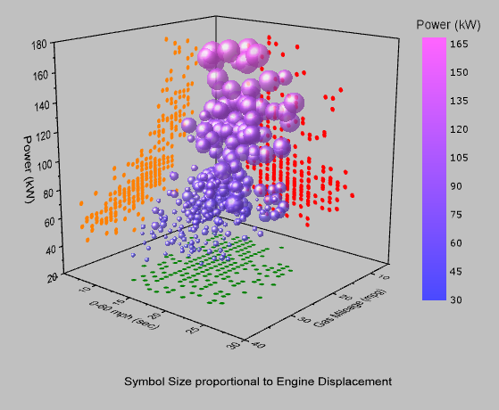
学習する項目
このチュートリアルでは、以下の項目について解説します。
- Zカラーマップ付き3D散布図を作成する
- 指定した列に対応するようにシンボルサイズを設定する
- 散布図を軸平面に投影する
ステップ
このチュートリアルは、チュートリアルデータプロジェクト（<Origin EXE Folder>\Samples\Tutorial
Data.opj）と関連しています。
また、ラーニングセンターからこのグラフを呼び出すことができます。(ヘルプ: ラーニングセンター メニューを選択、または キーボードのF11
キーを押して、グラフサンプル：3D Symbol Bar and Wallを選択します)
- Tutorial Data.opjを開き、プロジェクト・エクスプローラ (PE)で3D
Scatter with Colormap フォルダを開きます。
- ワークブックA3DScatterを選択して、C列を選択します。作図：3D：3D散布図とメニューから操作して3D散布図を作成します。
- OpenGLのバージョンが2.1より低い場合、グラフが正しく表示されない可能性があるという内容の以下のような確認メッセージがポップアップします。コンピュータで使用しているビデオカードのOpenGLのバージョンは確認メッセージに表示されます。OKをクリックして、ウィンドウを閉じます。
- 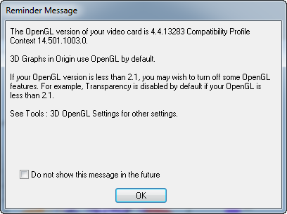
- Note：OpenGLのバージョンが低い場合、スピードモードがオンになります。
- プロット上でダブルクリックして、作図の詳細（プロット属性）ダイアログを開きます。もし、左パネルが表示されていない場合、
 ボタンをクリックしてダイアログを拡張します。左パネルでレイヤ1のノードを開き、その下にあるオリジナルレベルを選択します。このプロットは下データを有しています。このダイアログで3Ｄ散布図を編集します。
ボタンをクリックしてダイアログを拡張します。左パネルでレイヤ1のノードを開き、その下にあるオリジナルレベルを選択します。このプロットは下データを有しています。このダイアログで3Ｄ散布図を編集します。
- 右側パネルでシンボルタブを開き、形状を球にします。エンジン排気量をシンボルの大きさで表わすには、サイズのドロップダウンでCol("Engine
Displacement")を選択し、縮尺倍率を0.005にします。ドロップダウンを使用せずに、直接、手で入力してください。色は、ドロップダウンリストをクリックし、カラーチューザーのポイント毎タブでを選択します。ドロップダウンリストでカラーマップ:Col("Power")
と選んでワークシートのZカラーマップを設定します。透過率を25%に設定します。
- 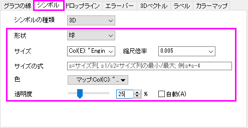
- カラーマップタブを選択します。レベルヘッダをクリックして、レベルの設定ダイアログを開きます。開始を30にセットします。増分のラジオボタンを選択して値を15にします。副レベル数を9にセットします。OKをクリックします。
- 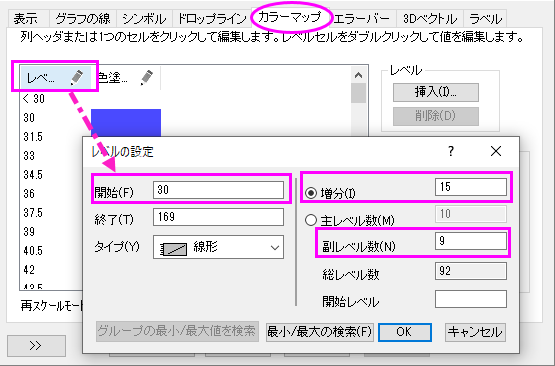
- 色塗りヘッダをクリックして、塗り方ダイアログを開きます。制限つき混合を選択します。デフォルトの最小値をクリックし、色設定パネルのカスタムセクション下のボックスをクリックして、色ダイアログを開きます。色ダイアログでは、右下の赤、緑、青に最小値は74,
74, 255を設定します。同じように、最大値に255, 100, 255 を入力します。OKをクリックします。
- 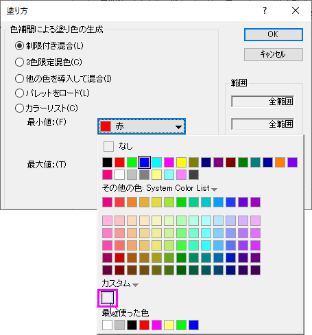
- 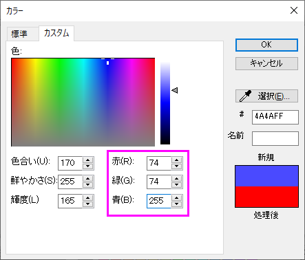
- レベル列が<30の色塗り列をクリックして、塗り方ダイアログを開きます。塗り色をなしに設定します。OKをクリックします。同じように、レベル列が>168の色塗りをなしにします。これで、指定した範囲外の場合は何も色がつかないようになります。
- 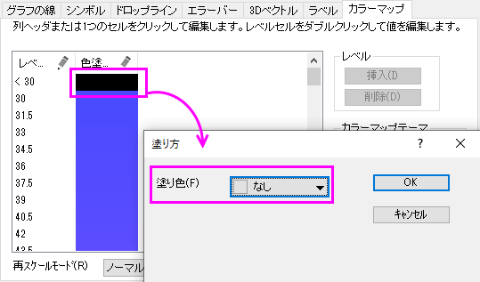
- 次に、データの投影図を追加します。作図の詳細ダイアログの左側パネルでオリジナルの上の項目を選択し、完全に独立のラジオボタンを選択します。これにより、投影が有効になったときに、それぞれを独立して編集できるようになります。左側パネルで、XY投影、ZX投影、YZ投影のチェックを全て付け、3つ全ての面で投影図を表示するようにします。
- 投影図の色を編集するには、XY投影を選択してからシンボルタブを開き、色のドロップダウンで指定色を選択してから12
オリーブに設定します。同じように、ZX投影とYZ投影では、ぞれぞれ色を2
赤と15 橙色に設定します。OKをクリックします。
- 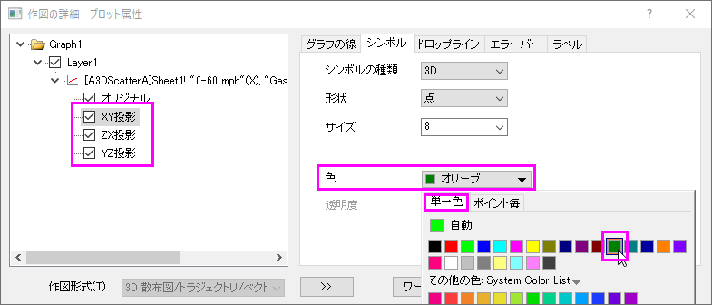
- グリッド線を取り除くには、Ｘ軸をダブルクリックして軸ダイアログを開きます。右側パネルでグリッド線タブを開いてから、Ctrlキーを押しながらX、Y、Zのアイコンを全てクリックして選択します。これで、3つの軸全てを同時に編集できます。主グリッド線の下にある表示のチェックを外し、全ての軸の主グリッド線を非表示にします。
- 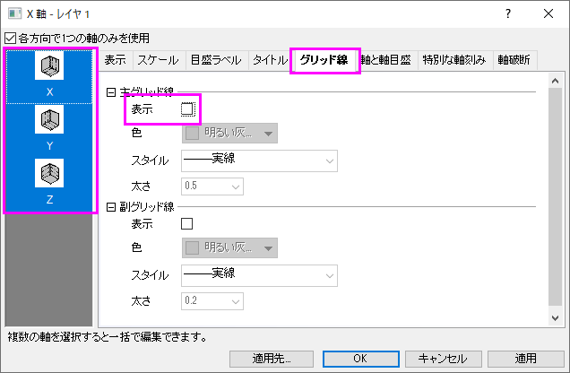
- では、軸のスケールを変更します。それぞれの軸のスケールタブで、次のように設定してください。X軸の場合、開始、終了、主目盛の増分値をそれぞれ、5,
30, 5に変更し、逆順のチェックをつけます。Y軸でも同様に開始、終了、主目盛の増分値を、5,
40,10に変更して逆順のチェックをつけ、Z軸では開始、終了、主目盛の増分値を、20,
180, 20に変更します。OKをクリックします。
- ウィンドウ全ての背景色を設定するには、作図の詳細ダイアログを再び開きます。左のパネルで、Layer1の上にあるGraphを選択します。表示指定タブを開きます。色を明るい灰色
に設定します。OKをクリックします。
- 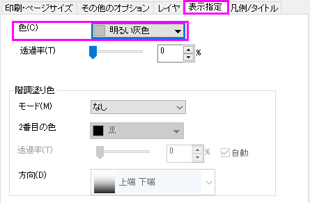
- デフォルトで作成された凡例オブジェクトを削除し、色スケールを変わりに作成します。
- 色スケール凡例を追加するにはグラフにオブジェクトを追加ツールバーにある色スケールの追加
 ボタンをクリックします。色スケールをダブルクリックし、色階調制御ダイアログを開きます。色スケールのフォーマットを、以下の図のように設定します。
ボタンをクリックします。色スケールをダブルクリックし、色階調制御ダイアログを開きます。色スケールのフォーマットを、以下の図のように設定します。
- 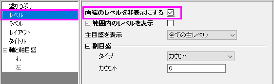
- 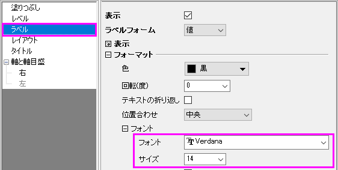
- 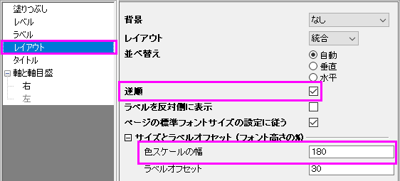
- 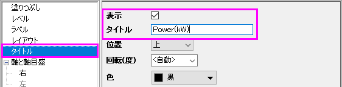
- 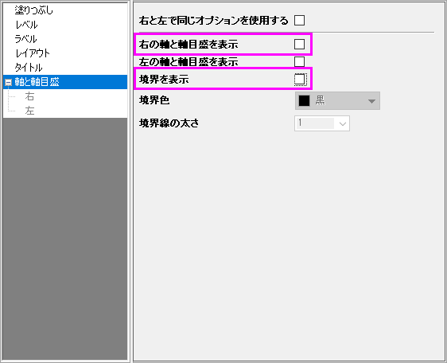
- ページレイヤを右クリックし、コンテキストメニューを開きます。レイヤタイトルの追加/変更を選択して、レイヤタイトルにとして表示されるテキストボックスに「Symbol
Size proportional to Engine Displacement」と入力します。
- 下図のようなグラフになります。回転して他の角度も確認してください。